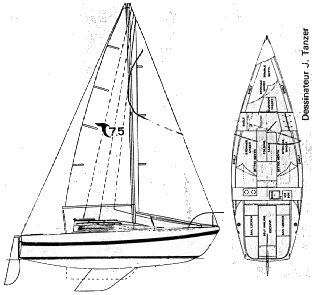

Updates
Hello from Salt Spring Island
May 17th 12:14pm PT
We arrived in Ganges, Salt Spring island yesterday evening (Long harbor). We tried several anchoring spots before we were content with ours. There is a very large amount of boats anchored, on mooring balls and at anchor, tons of shanty boat (that means boats typicly in rough shape, used by live-abords, not moving in most cases for a very very long time), some anchored since forever with mussels growing on their anchor line (not even chain), some rafted together like entire small towns, wrecks of old shanty boats washed on the beaches around, a weird giant barge with military vehicle, floating homes attached to docks barely floating, of those homes, many that appear to be built of plywood likely stapled together with serious openings in between walls and windows, with solar panels crazy glued over their roof. No surprise we were welcomed by the Port master saying in the most welcoming way “fuck off, can’t use our dinghy dock”. Oh well. The beach is fine to land too, it turns out. For anchoring, we opted for a very shallow spot near shore, between the giant barge with the military vehicle and two wrecks of old broken boats washed on the beach. Strangewaves has an additional stern anchor this time, to avoid drifting toward shore too much (too shallow). It is good to be back here, Ganges is a lovely town. We are likely staying here another day or two, then we will (probably) hit Montague harbor on Galliano island and from there cross to Vancouver anytime soon after! The library is awesome here and there are no extra-low tide in the next couple of days (would be a problem for the boat and we would need to move to a new spot), so no rush to leave yet.
As far as what we have been up to in the previous days, we stayed on Pender island over the weekend, met up with our friend Robin and his girlfriend as well as with her friends (locals from the island), who took us on a very beautiful hike on the North side of the island. It was absolutely beautiful, we stayed up there and had a picnic, foraged some wild food... For the record, this is what death camas looks like ;-) Pender island is filled with an unusual magic, always present in my experience. From the bioluminescence (creatures that glow in the water at night) very bright, brighter than anywhere that I have seen yet (they get very agitated and glow brighter and bigger as we paddle thru in the dark), to all the funny weird things happening there, like our yellow jacket disaster in 2013, or my brake cable snapping in a weird way that lead us to meet the entire town and be part of it for a couple of weeks after. If you have never been there and intend to check it out, bring a frizbee as they have the most amazing dics golf course and rent a kayak at night if you don’t have one with you. Ahh, Pender, it is such a wonderful island. We decided to leave on Sunday, as we had favorable winds and current to go to Saturna island and winds were predicted to get very strong the next day (20 to 25 knots, too much for sailing) and anchored in Boot Cove one night. That sucked. It is a beautiful place, well protected for the record, in a sweet little bay but surrounded by rich people’s houses (seconds more likely) and no public access to get anywhere we need, that is part of why we went for Winter Cove the next day. No power in any of those places, but Winter cove is a park and we went for a lovely hike looking at the Straight of Georgia, Vancouver etc.
About
The Plan
The vision for this trip has changed quite a bit over the last couple of months but at this point we are planning on sailing around the Salish sea for a while, spending some time on various islands of the San Juan Islands (U.S), the Gulf Islands (Canada), Vancouver BC and hopefully Lasqueti Island (BC). The route is still very open, actually we haven't figured out much of it yet. We are hoping to sleep mostly at anchor, with some exceptions for cold nights, storms, need to recharge the batteries (which we will find out how long they last) or too many days of rain in a row (requiring an electric heater to dry off our clothes). As Jon will still be working on his current software project, we will be exploring libraries a lot and hunting for cafes, wifi and power. As of for me, having started learning html/css and basic programming recently, I created this blog using stuff recently learned and playing with making this site is a good way for me to pratice all this fun stuff and keep the awesome people in our lives updated about our adventure. Equipped with a 5 gallon water tank, no heater and about 33L (8.75 Gallons) of fuel, we are ready for the challenge! If winds go as planned, we are leaving Sunday April 30th early in the morning and coming back sometime in July. This is going to be by far our longest trip onboard Strangewaves!
Steph
 That's me. I am the captain and blogger and the one mostly keeping this blog up to date. I will try my best to put updates about where we are and what we are up to every week (depending on internet connection, power and motivation). My experience with sailing is still relatively recent, but to draw the big picture I had the chance to crew a few times between 2014 and 2015 for small day-sails on friend's boats. That same winter, after a long bicycle trip from PT to San Diego, Jon and I got to live on a motor boat and had the opportunity to learn more about sailing during that same period, and the idea grew from there... I moved to Victoria in the beginning of 2015, started reading more about sailing... and looked for a boat to buy. This is how I found Strangewaves <3
That's me. I am the captain and blogger and the one mostly keeping this blog up to date. I will try my best to put updates about where we are and what we are up to every week (depending on internet connection, power and motivation). My experience with sailing is still relatively recent, but to draw the big picture I had the chance to crew a few times between 2014 and 2015 for small day-sails on friend's boats. That same winter, after a long bicycle trip from PT to San Diego, Jon and I got to live on a motor boat and had the opportunity to learn more about sailing during that same period, and the idea grew from there... I moved to Victoria in the beginning of 2015, started reading more about sailing... and looked for a boat to buy. This is how I found Strangewaves <3
Jon
 Jon, as I am sure you already know (not many people will read this blog is my guess) grew up sailing with his dad on the East Coast and has had an interest in sailing for a long time. He had the chance to crew with a good friend of ours from Port Townsend to Petersberg, AK, a couple of years ago (check out his pictures). With his great skill at convincing his friends to get boats (so he gets to crew and not maintain the thing) he was definitely a significant part of the beginning of my quest to find a sailboat. This said, I am glad he did and sailing with such a goofball is quite a wonderful thing. Silly when conditions allow it, serious/cautious when needed, and so far never seasick (in my experience with him at least), it's a lot of fun to cruise with him.
Jon, as I am sure you already know (not many people will read this blog is my guess) grew up sailing with his dad on the East Coast and has had an interest in sailing for a long time. He had the chance to crew with a good friend of ours from Port Townsend to Petersberg, AK, a couple of years ago (check out his pictures). With his great skill at convincing his friends to get boats (so he gets to crew and not maintain the thing) he was definitely a significant part of the beginning of my quest to find a sailboat. This said, I am glad he did and sailing with such a goofball is quite a wonderful thing. Silly when conditions allow it, serious/cautious when needed, and so far never seasick (in my experience with him at least), it's a lot of fun to cruise with him.
The Boat
The Boat is a Tanzer 7.5 (stands for 7.5 meters, so just under 25 feet), built in 1978. She is a sloop and was designed by Johann Tanzer. The 7.5 model was designed with two different keels, the fin keel and shoal keel (the one Strangewaves has), with only 2.67ft draft. She is equipped with a 9.9 horsepower 2012 Yahama outboard engine (kick ass little thing), 5 (19L) Gallons water tank (that's right, but we do have extra gallons stashed everywhere), about 33L (8.75Gallons) of fuel capacity, and no source of heating at anchor. We are not sissies (we hope)!
She was purchased by myself in Victoria, BC in March 2015 as I was looking for both a cheap place to live in Victoria and a way to do more sailing.